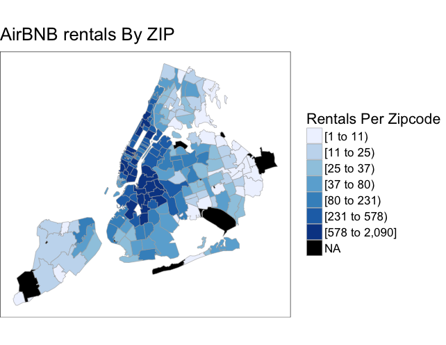
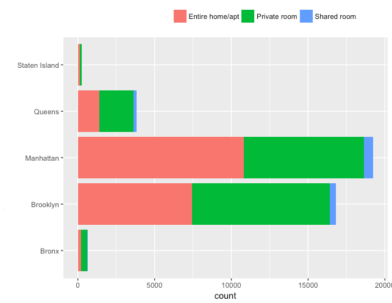
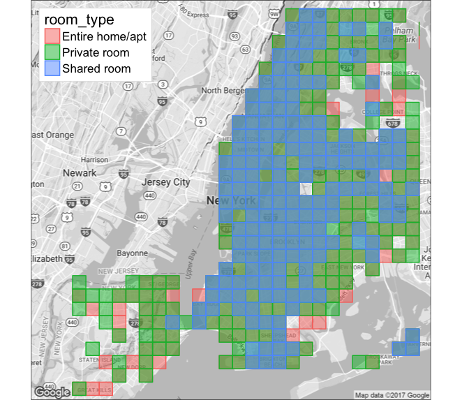
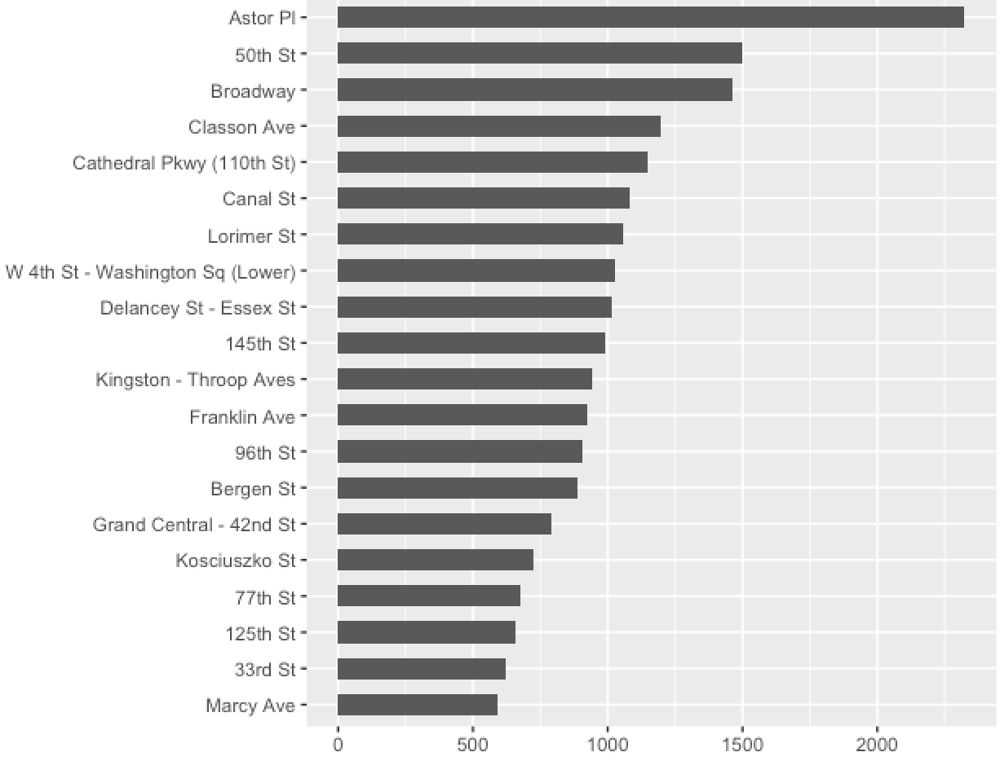
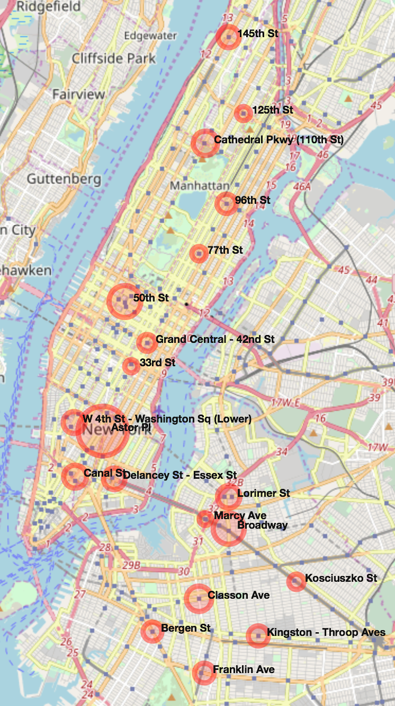
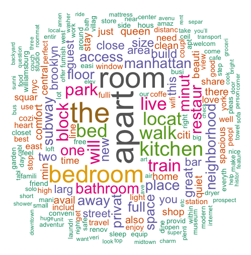
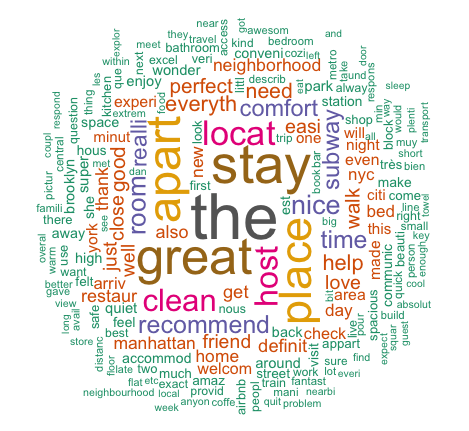

In this day and age of so many sharing services like Uber and Lyft , pricey hotels are being replaced by Airbnb. Students, working people and travelers wouldn’t always want to pay a high price for staying a couple of nights at the Marriott and would rather stay at a place where that has the basic amenities needed for them at a reasonable price. In this project I am trying to understand the listings put on Airbnb on how the price varies by neighborhood ,house type and various other factors.
I am using the data for New York for this post. To start with we can see the properties listed by neighborhood across New York.In the table below you can see the count for the Airbnb listings aggregated at burrough level and neighborhood level.
####Summarizing Price
As we saw the count for listings at neighborhood and burrough level below are the prices .
We could also see the listings per zip code level. I have use Ari Lamstien’s R package choroplethrzip . Taking the five burroughs of New York and all the zip codes within them I aggregated the listings per zipcode and mapped them .As you can see Manhattan and Brooklyn regions are the one with most listings.

The Airbnb listings are generally categorized as an Entire Apartment / Home , private room and shared room.Below is the pricing for each type of listing.
This graph below shows how each of the Burroughs have listings by property type.

To understand how the listings are spatially located I did plot them and bin them by property time to visualize where the listings are shared or entire apartment.

Subway vs Rental Listings
Apart from all the amenities mentioned in the listing one of the most important factor when it comes to booking a listing in New York is the proximity to a subway stop. I downloaded a json for the subways and plotted them against the listings. Considering that people want to live close-by I took as 0.1 mile as a walking distance , I created a buffer to capture all the listings inside that 0.1 mile ring.I took the top 20 to understand which of the subway stations had the most listings nearby.

The same results were also plotted on the map using the leaflet package to visualize where these subway stations are located and how many listings they have using the graduated symbols.

Description
The description and the photos put by the property owner plays an important role for anyone to book a listing . A word-cloud of those description helps us understand what do property owners mention in the description which might help them in more bookings.

Amenties
When you book a listing in Airbnb I assume the first thing we look for is does the listing have wifi /internet . So based on the amenities provided across all listings I mapped a word cloud to see what are the top amenities listed by the owners for the property.
Reviews Once the user goes through the list of amenities they do scroll down through the reviews to see what people who have stayed in this property thought about. Was the property as per mentioned in the listing ? Was the bed making noise ? Any suggestions for restaurants nearby?

What Next
The next stage for this project is to identify a relationship between the proximity of listing to subway stations , amenities listed for the property,POI’s such as restaurants, workplace, demographic variables such as daytime population. A shiny app which would show the listings and various layers such as rental price by geographies , all in one place for all the cities Airbnb have the rentals listed.